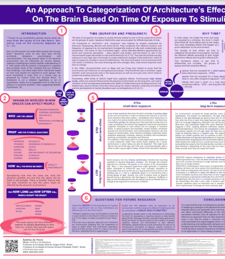
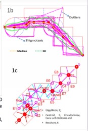

Posters | Spatial Interactions & Navigation
Posters aren't eligible for credit

Andrea de Paiva

Mark Alan Hewitt
Joori Suh , Ji Young Cho

Ann Heylighen
Ercument Gorgu,Chaoran Chen

Alexander Johnson, Douglas Nitz
Dr. Mizan Rambhoros, Dr. Matthew Pelowski


Sudhir Kumar Pasala,Mehdi Khamassi
Yang Chen Lin,Chih Mao Huang